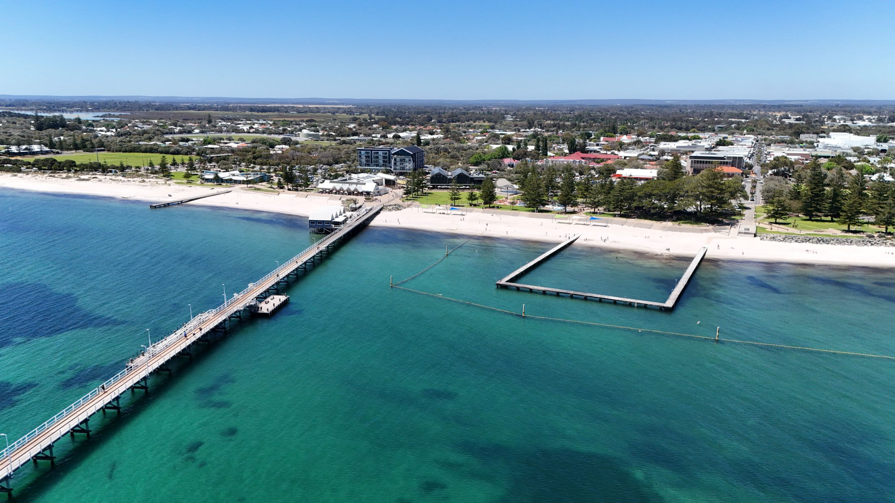

This is the argument for Bunbury that needs the least explaining. You are living at the top of the South West, which is the part of Western Australia that everyone else drives four hours to reach.
Thirty minutes: the Ferguson Valley
Rolling green hills, small wineries and breweries, and a scale that makes it a casual afternoon rather than a planned trip. This is the one people underestimate before they move and use most after — close enough that you go without deciding to.
An hour south: Busselton and Geographe Bay
Calm, shallow, north-facing water and a jetty that runs a remarkable distance out to sea. This is where Bunbury families go when the surf coast is too rough for small children, and it is the gateway to everything further south.

Ninety minutes: the Margaret River region
An hour inland: Collie and the forest country
The other direction, and less obvious. Collie has become a serious mountain-biking destination, with purpose-built trail networks that draw riders from Perth, and the surrounding national park has dams, walking and the kind of quiet that the coast does not offer in summer. It is also the reminder that the South West is not only a coastline.
In the city itself
- Surf and long walks on the ocean side
- Flat, sheltered water in Koombana Bay
- The resident wild dolphin population
- The estuary for kayaking and fishing
- The lookout for the sunset, which is a local ritual
- A regional theatre with a real programme
- An art gallery in a converted convent
- Whale watching offshore in season
People drive four hours from Perth for the weekend you get by driving thirty minutes.
Wine country half an hour away, Busselton in fifty minutes, Margaret River in ninety, and mountain-bike trails an hour inland. Bunbury is not near the South West — it is in it, and that is the part that keeps people here after the job stops being new.